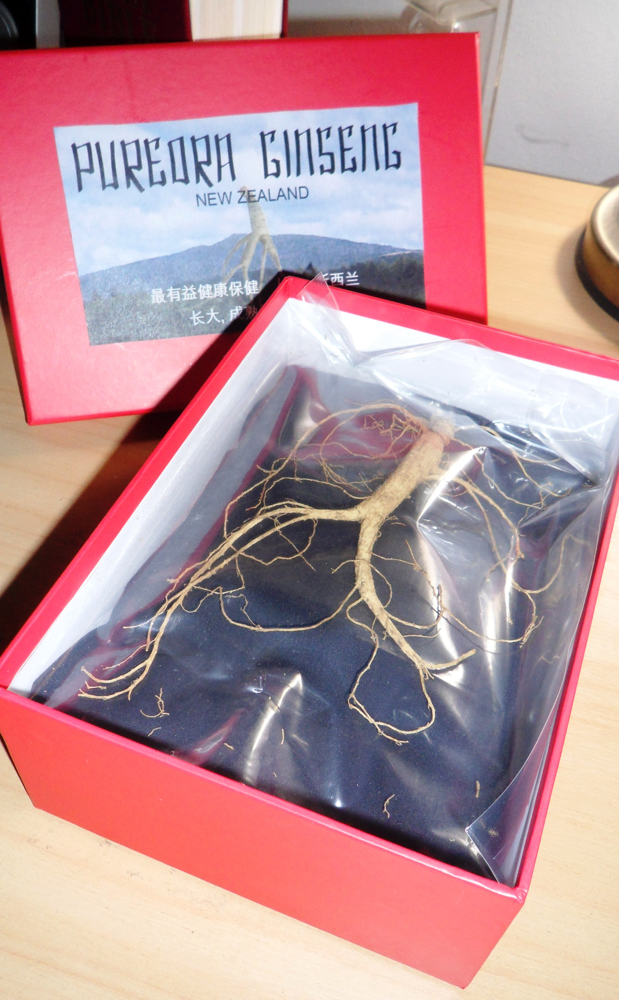

SOLUTION
 Today New Zealand Pure Wild Ginseng is being harvested and more extensive research has established there are other suitable growing environments across the Central North Island. Maraeroa are providing seedlings and guidance for future high quality crops for this new industry. This has been a journey of questioning and forging new relationships to create a knowledge and skill base to build a prosperous future.